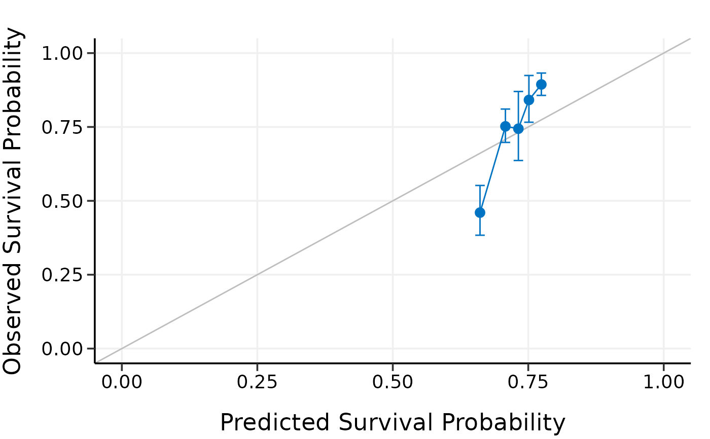
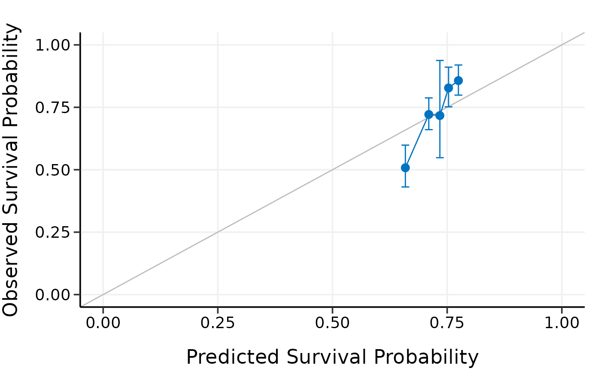

Calibrate high-dimensional Cox models
Usage
calibrate(
x,
time,
event,
model.type = c("lasso", "alasso", "flasso", "enet", "aenet", "mcp", "mnet", "scad",
"snet"),
alpha,
lambda,
pen.factor = NULL,
gamma,
lambda1,
lambda2,
method = c("fitting", "bootstrap", "cv", "repeated.cv"),
boot.times = NULL,
nfolds = NULL,
rep.times = NULL,
pred.at,
ngroup = 5,
seed = 1001,
trace = TRUE
)Arguments
- x
Matrix of training data used for fitting the model; on which to run the calibration.
- time
Survival time. Must be of the same length with the number of rows as
x.- event
Status indicator, normally 0 = alive, 1 = dead. Must be of the same length with the number of rows as
x.- model.type
Model type to calibrate. Could be one of
"lasso","alasso","flasso","enet","aenet","mcp","mnet","scad", or"snet".- alpha
Value of the elastic-net mixing parameter alpha for
enet,aenet,mnet, andsnetmodels. Forlasso,alasso,mcp, andscadmodels, please setalpha = 1.alpha=1: lasso (l1) penalty;alpha=0: ridge (l2) penalty. Note that formnetandsnetmodels,alphacan be set to very close to 0 but not 0 exactly.- lambda
Value of the penalty parameter lambda to use in the model fits on the resampled data. From the Cox model you have built.
- pen.factor
Penalty factors to apply to each coefficient. From the built adaptive lasso or adaptive elastic-net model.
- gamma
Value of the model parameter gamma for MCP/SCAD/Mnet/Snet models.
- lambda1
Value of the penalty parameter lambda1 for fused lasso model.
- lambda2
Value of the penalty parameter lambda2 for fused lasso model.
- method
Calibration method. Options including
"fitting","bootstrap","cv", and"repeated.cv".- boot.times
Number of repetitions for bootstrap.
- nfolds
Number of folds for cross-validation and repeated cross-validation.
- rep.times
Number of repeated times for repeated cross-validation.
- pred.at
Time point at which calibration should take place.
- ngroup
Number of groups to be formed for calibration.
- seed
A random seed for resampling.
- trace
Logical. Output the calibration progress or not. Default is
TRUE.
Examples
data("smart")
x <- as.matrix(smart[, -c(1, 2)])
time <- smart$TEVENT
event <- smart$EVENT
y <- survival::Surv(time, event)
# Fit Cox model with lasso penalty
fit <- fit_lasso(x, y, nfolds = 5, rule = "lambda.1se", seed = 11)
# Model calibration by fitting the original data directly
cal.fitting <- calibrate(
x, time, event,
model.type = "lasso",
alpha = 1, lambda = fit$lambda,
method = "fitting",
pred.at = 365 * 9, ngroup = 5,
seed = 1010
)
#> Start fitting ...
# Model calibration by 5-fold cross-validation
cal.cv <- calibrate(
x, time, event,
model.type = "lasso",
alpha = 1, lambda = fit$lambda,
method = "cv", nfolds = 5,
pred.at = 365 * 9, ngroup = 5,
seed = 1010
)
#> Start fold 1
#> Start fold 2
#> Start fold 3
#> Start fold 4
#> Start fold 5
print(cal.fitting)
#> High-Dimensional Cox Model Calibration Object
#> Random seed: 1010
#> Calibration method: fitting
#> Model type: lasso
#> glmnet model alpha: 1
#> glmnet model lambda: 0.02581047
#> glmnet model penalty factor: not specified
#> Calibration time point: 3285
#> Number of groups formed for calibration: 5
summary(cal.fitting)
#> Calibration Summary Table
#> Predicted Observed Lower 95% Upper 95%
#> 1 0.6158701 0.4719854 0.3976380 0.5602336
#> 2 0.7018983 0.6721901 0.5366629 0.8419427
#> 3 0.7426685 0.8123688 0.7649860 0.8626864
#> 4 0.7744025 0.8212207 0.7321243 0.9211598
#> 5 0.8095739 0.8875319 0.8496029 0.9271542
plot(cal.fitting)

print(cal.cv)
#> High-Dimensional Cox Model Calibration Object
#> Random seed: 1010
#> Calibration method: k-fold cross-validation
#> Cross-validation folds: 5
#> Model type: lasso
#> glmnet model alpha: 1
#> glmnet model lambda: 0.02581047
#> glmnet model penalty factor: not specified
#> Calibration time point: 3285
#> Number of groups formed for calibration: 5
summary(cal.cv)
#> Calibration Summary Table
#> Predicted Observed Lower 95% Upper 95%
#> 1 0.6153221 0.4935001 0.4218929 0.5772611
#> 2 0.7031538 0.6876453 0.5678162 0.8327626
#> 3 0.7450765 0.7955637 0.7364360 0.8594387
#> 4 0.7757004 0.8274510 0.7484363 0.9148076
#> 5 0.8097056 0.8838732 0.8466946 0.9226844
plot(cal.cv)

# # Test fused lasso, SCAD, and Mnet models
# data(smart)
# x = as.matrix(smart[, -c(1, 2)])[1:500, ]
# time = smart$TEVENT[1:500]
# event = smart$EVENT[1:500]
# y = survival::Surv(time, event)
#
# set.seed(1010)
# cal.fitting = calibrate(
# x, time, event, model.type = "flasso",
# lambda1 = 5, lambda2 = 2,
# method = "fitting",
# pred.at = 365 * 9, ngroup = 5,
# seed = 1010)
#
# cal.boot = calibrate(
# x, time, event, model.type = "scad",
# gamma = 3.7, alpha = 1, lambda = 0.03,
# method = "bootstrap", boot.times = 10,
# pred.at = 365 * 9, ngroup = 5,
# seed = 1010)
#
# cal.cv = calibrate(
# x, time, event, model.type = "mnet",
# gamma = 3, alpha = 0.3, lambda = 0.03,
# method = "cv", nfolds = 5,
# pred.at = 365 * 9, ngroup = 5,
# seed = 1010)
#
# cal.repcv = calibrate(
# x, time, event, model.type = "flasso",
# lambda1 = 5, lambda2 = 2,
# method = "repeated.cv", nfolds = 5, rep.times = 3,
# pred.at = 365 * 9, ngroup = 5,
# seed = 1010)
#
# print(cal.fitting)
# summary(cal.fitting)
# plot(cal.fitting)
#
# print(cal.boot)
# summary(cal.boot)
# plot(cal.boot)
#
# print(cal.cv)
# summary(cal.cv)
# plot(cal.cv)
#
# print(cal.repcv)
# summary(cal.repcv)
# plot(cal.repcv)